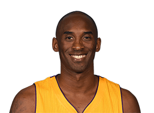

NBA
首页
赛程
球员
精彩集锦
球队
联系我们

科比-布莱恩特
Kobe Bryant
后卫 24号
别名
科比
身高
198cm
体重
96.0kg
臂展
211cm
选秀
1996年首轮第13顺位被夏洛特黄蜂队选中
薪水
-
球龄
20年
国籍
美国
学校
劳尔梅里恩高中
球员介绍
科比·比恩·布莱恩特（Kobe Bean Bryant，1978年8月23日—2020年1月26日），出生于美国宾夕法尼亚州费城，美国前职业篮球运动员，司职得分后卫/小前锋（锋卫摇摆人），绰号“黑曼巴”/“小飞侠”，前NBA球员乔·布莱恩特的儿子。
1996年NBA选秀中，科比在第1轮第13位被夏洛特黄蜂队选中，后被交易至洛杉矶湖人队，整个NBA生涯（1996年-2016年）全部效力于NBA洛杉矶湖人队。
科比的职业生涯随湖人队5夺NBA总冠军（2000年-2002年、2009年-2010年）；荣膺1次常规赛MVP（2007-08赛季），2次总决赛MVP（2009年-2010年），4次全明星赛MVP（2002年、2007年、2009年与2011年），与鲍勃·佩蒂特并列NBA历史第一；共18次入选NBA全明星阵容，15次入选NBA最佳阵容，12次入选NBA最佳防守阵容。
科比是NBA最好的得分手之一，生涯赢得无数奖项，突破、投篮、罚球、三分球他都驾轻就熟，几乎没有进攻盲区，单场比赛81分的纪录就有力地证明了这一点。除了疯狂的得分外，科比的组织能力也很出众，经常担任球队进攻的第一发起人。另外科比还是联盟中最好的防守人之一，贴身防守很具有压迫性。2016年4月14日，科比·布莱恩特在生涯最后一场主场对阵爵士的常规赛后宣布退役。2017年12月19日，湖人主场对阵勇士，中场时刻为科比的8号和24号2件球衣举行退役仪式。2018年3月13日，科比凭借和动画师格兰·基恩合作的短片《亲爱的篮球》获第90届奥斯卡最佳短片奖。 2020年1月26日，科比在卡拉巴萨斯因直升机事故丧生，终年41岁。
©2021包头师范学院20级国际班ZYN--web项目
任何内容都不得以任何形式被复制、再传播，或篡改。
有任何的建议和意见，都欢迎联络我:1176164611@qq.com